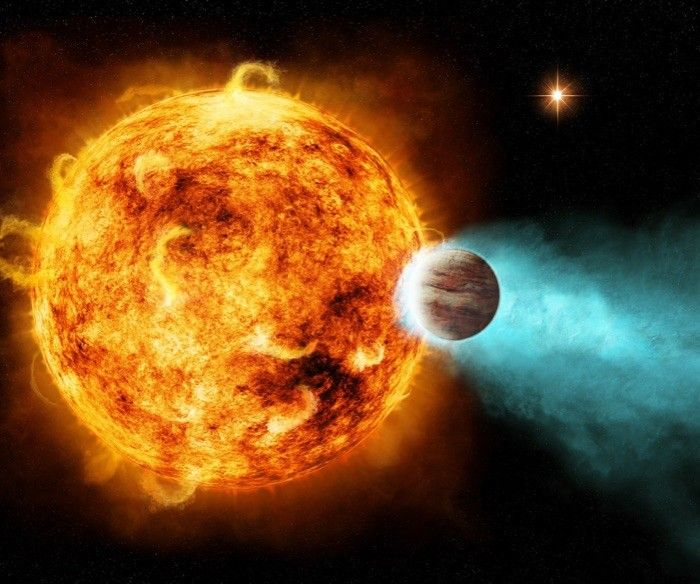
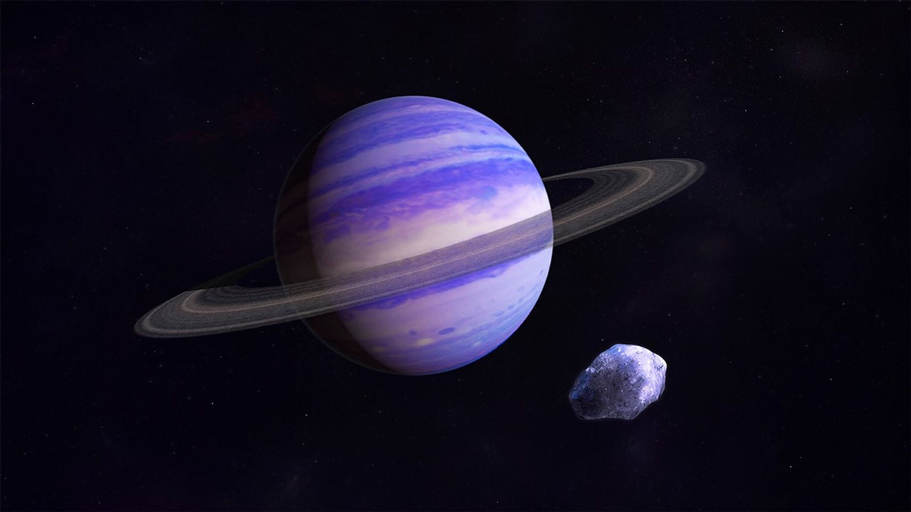
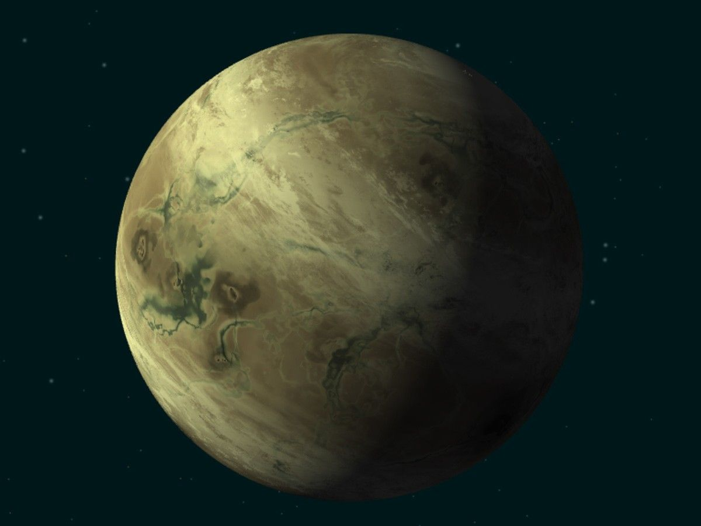
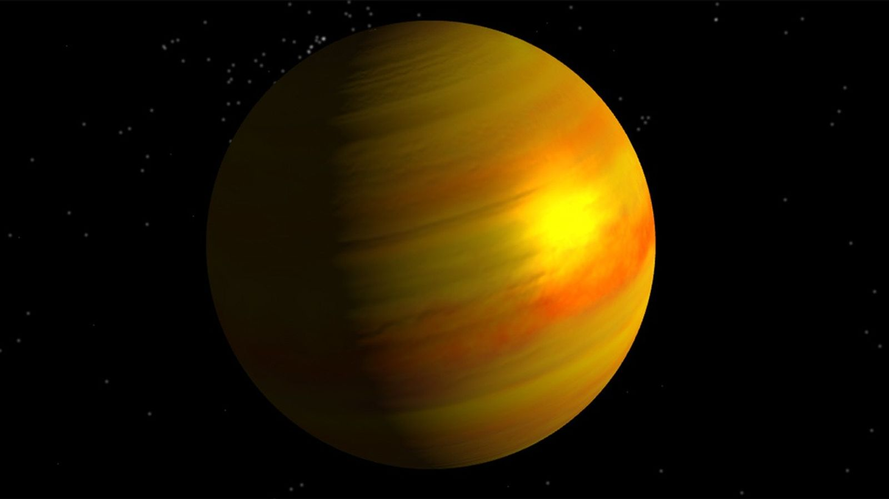

The planets beyond our solar system are called “exoplanets,” and they come in a wide variety of sizes, from
gas giants larger than Jupiter to small, rocky planets about as big around as Earth or Mars. They can be hot
enough to boil metal or locked in deep freeze. They can orbit their stars so tightly that a “year” lasts only
a few days; they can orbit two suns at once. Some exoplanets are even sunless rogues, wandering solo through
the galaxy in permanent darkness.
Our Galaxy
Our galaxy, the Milky Way, is the thick stream of stars that cuts across the sky on the darkest, clearest
nights. Its spiraling expanse contains at least 100 billion stars, our Sun among them. And if each of those
stars has not just one planet, but, like ours, a whole system of them, then the number of planets in the
galaxy is truly astronomical: We’re already heading into the trillions.
We humans have been speculating about such possibilities for thousands of years, but ours is the first
generation to know, with certainty, that exoplanets are really out there. In fact, way out there. Our nearest
neighboring star, Proxima Centauri, was found to possess at least one planet – probably a rocky one. It’s
about 4 light-years away – more than 25 trillion miles (40 trillion kilometers). The bulk of exoplanets found
so far are hundreds or thousands of light-years away.
The bad news: As yet we have no way to reach them, and won’t be leaving footprints on them anytime soon. The
good news: We can look in on them, take their temperatures, taste their atmospheres and, perhaps one day soon,
detect signs of life that might be hidden in pixels of light captured from these dim, distant worlds.
Discovery
The first exoplanets were discovered in the early 1990s, but the first exoplanet to burst upon the world stage
was 51 Pegasi b, a “hot Jupiter” orbiting a Sun-like star 50 light-years away. The watershed year was 1995.
Since then we’ve discovered thousands more.
Size and mass play a crucial role in determining planet types. There are also varieties within the size/mass
classifications. Scientists also have noted what seems to be a strange gap in planet sizes. It’s been dubbed
the “radius valley,” or the Fulton gap, after Benjamin Fulton, lead author on a paper describing it. Data from
NASA’s Kepler spacecraft showed that planets of a certain size-range are rare – those between 1.5 and 2 times
the size (diameter) of Earth, which would place them among the super-Earths. It’s possible that this
represents a critical size in planet formation: Planets that reach this size quickly attract thick atmospheres
of hydrogen and helium gas, and balloon up into gaseous planets, while planets smaller than this limit are not
large enough to hold such an atmosphere and remain primarily rocky, terrestrial bodies. On the other hand, the
smaller planets that orbit close to their stars could be the cores of Neptune-like worlds that had their
atmospheres stripped away.
Explaining the Fulton gap will require a far better understanding of how planetary systems form.
Types

Gas giants
Gas giants are planets the size of Saturn or Jupiter, the largest planet in our solar system, or much,
much larger. More variety is hidden within these broad categories. Hot Jupiters, for instance, were
among the first planet types found – gas giants orbiting so closely to their stars that their
temperatures soar into the thousands of degrees (Fahrenheit or Celsius).
Read More
Gas giants are planets the size of Saturn or Jupiter, the largest planet in our solar system, or
much, much larger. More variety is hidden within these broad categories. Hot Jupiters, for instance,
were among the first planet types found – gas giants orbiting so closely to their stars that their
temperatures soar into the thousands of degrees (Fahrenheit or Celsius).

Neptunian planets
Neptunian planets are similar in size to Neptune or Uranus in our solar system. They likely have a
mixture of interior compositions, but all will have hydrogen and helium-dominated outer atmospheres
and rocky cores. We’re also discovering mini-Neptunes, planets smaller than Neptune and bigger than
Earth. No planets of this size or type exist in our solar system.
Read More
Neptunian planets are similar in size to Neptune or Uranus in our solar system. They likely have a
mixture of interior compositions, but all will have hydrogen and helium-dominated outer atmospheres
and rocky cores. We’re also discovering mini-Neptunes, planets smaller than Neptune and bigger than
Earth. No planets of this size or type exist in our solar system.

Super-Earths
Super-Earths are typically terrestrial planets that may or may not have atmospheres. They are more
massive than Earth, but lighter than Neptune.
Read More
Super-Earths are typically terrestrial planets that may or may not have atmospheres. They are more
massive than Earth, but lighter than Neptune.

Terrestrial planets
Terrestrial planets are Earth sized and smaller, composed of rock, silicate, water or carbon. Further
investigation will determine whether some of them possess atmospheres, oceans or other signs of
habitability.
Read More
Terrestrial planets are Earth sized and smaller, composed of rock, silicate, water or carbon.
Further investigation will determine whether some of them possess atmospheres, oceans or other signs
of habitability.